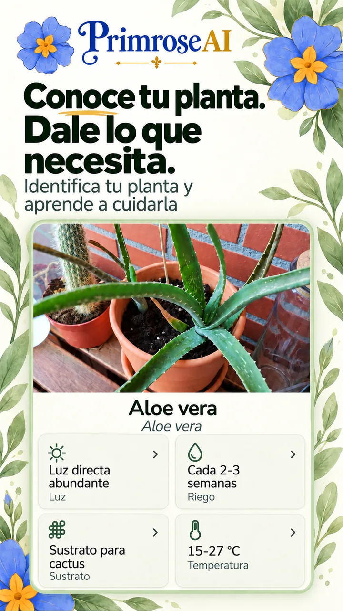
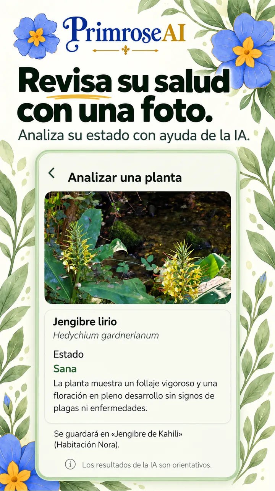
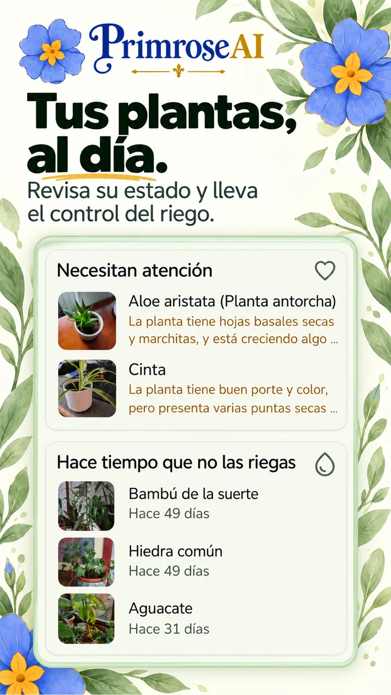
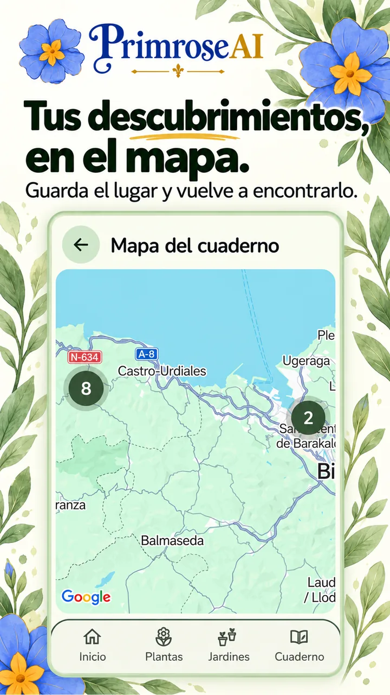
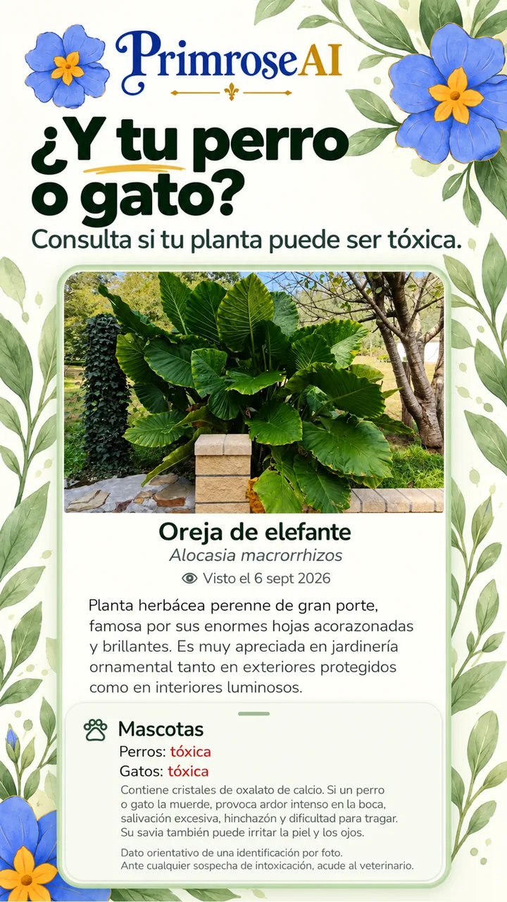
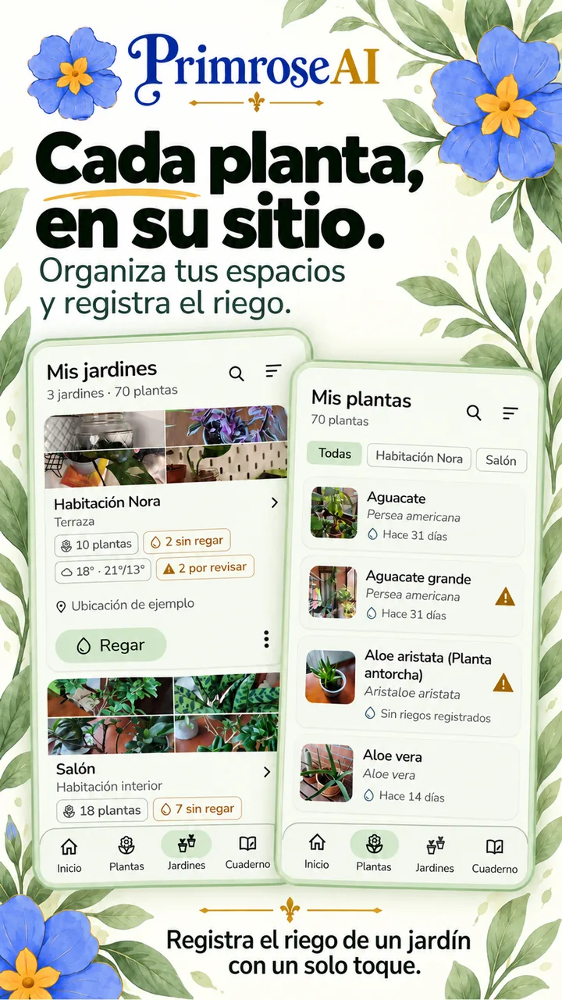
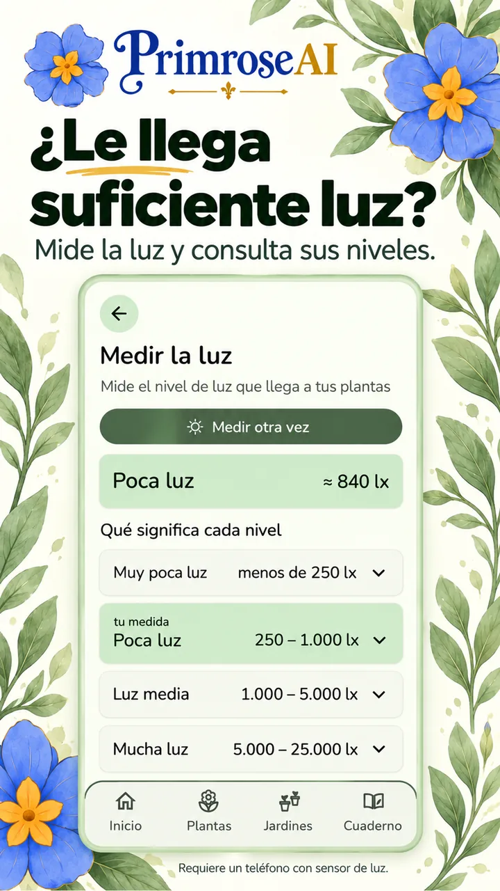

Primrose AI. Mima tus plantas

Identifica tus plantas.Descubre sus características y los cuidados que necesitan: riego, sustrato, luz, poda, abono… 
Cuida su salud.Analiza la parte de la planta que te preocupa para detectar posibles problemas y recibir recomendaciones de cuidado. 
Riego sin agobios.¿Se te olvida regar tus plantas? Te enviamos recordatorios de riego. 
Tu cuaderno de campo, siempre contigo.Guarda las plantas que descubres en tus paseos y viajes. Consulta su ubicación en el mapa y utiliza el GPS para volver a encontrarlas. 
Cuida también de tus mascotas.Consulta si una planta puede ser tóxica para tus mascotas y toma precauciones para protegerlas. 
Gestiona tus jardines.Agrupa tus plantas en jardines, organiza tus espacios y simplifica el riego. Si tus jardines están al aire libre, te avisamos del tiempo adverso para que puedas proteger tus plantas. 
¿Reciben tus plantas la luz que necesitan?Mide la luz que les llega a tus plantas para saber si están en el sitio adecuado.